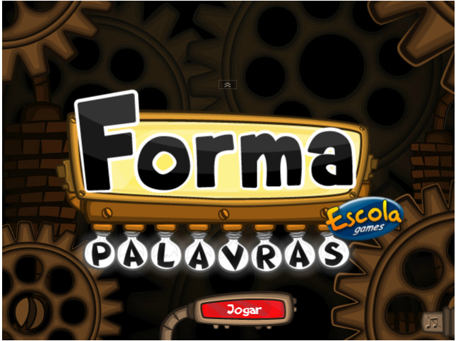

ZEBU NA COZINHA
Você gosta de cozinhar? Já preparou algum prato especial na sua casa? Aprenda receitas deliciosas, a base de carne, e faça um almoço especial para sua família. Jogo de culinária. Dica para o educador Maneira divertida de estimular os alunos a conhecerem o nome de vários ingredientes da nossa culinária e na preparação de refeições saudáveis.